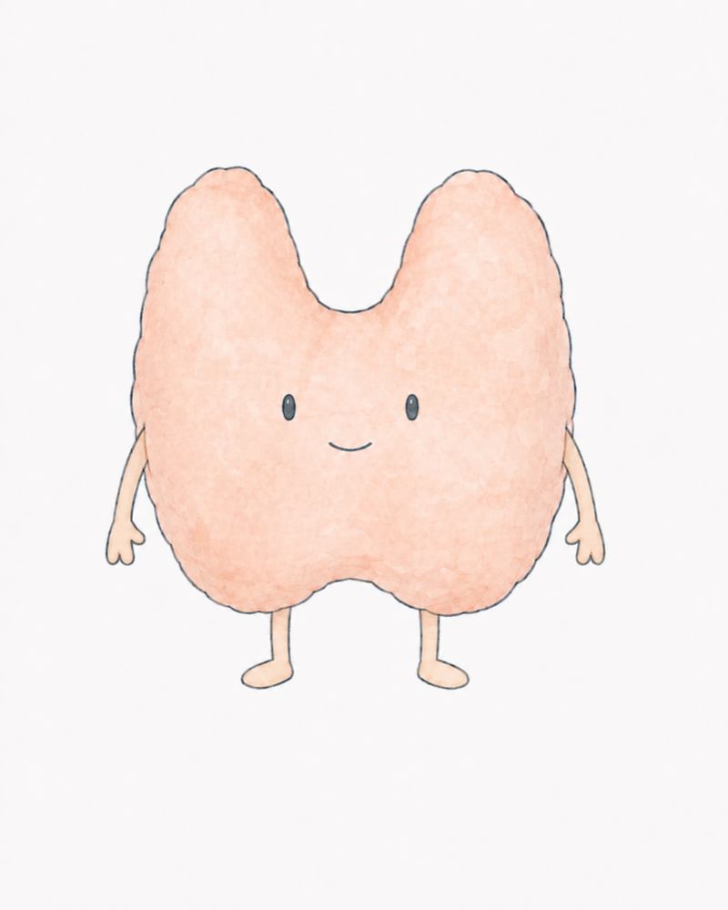
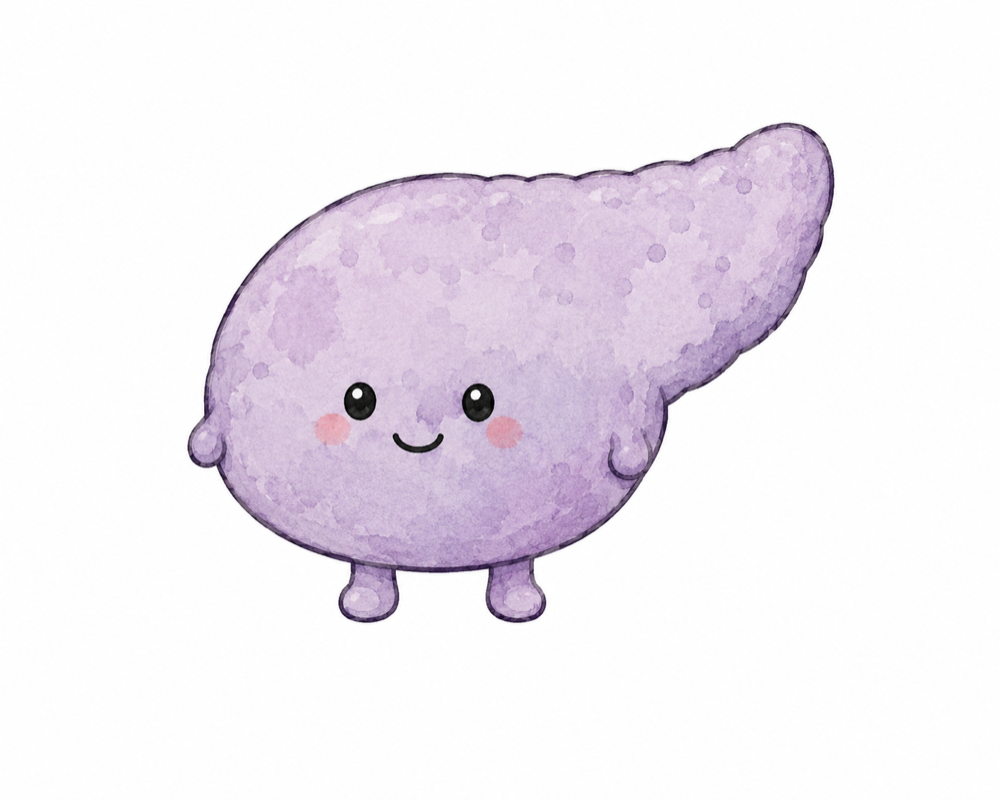
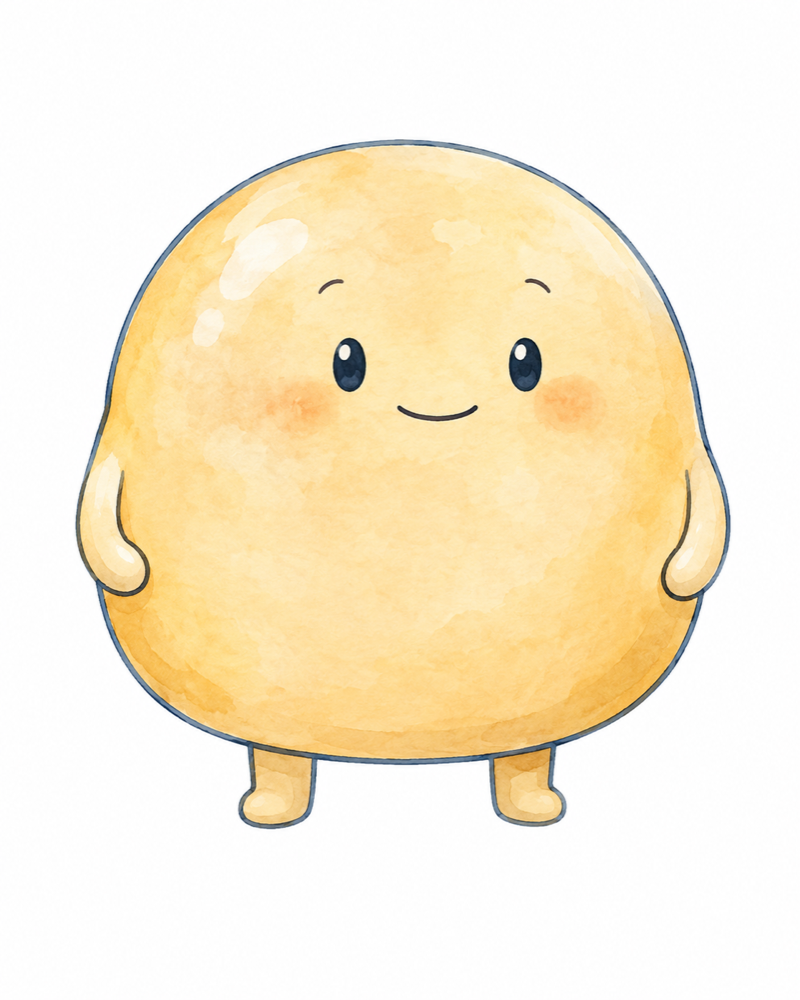
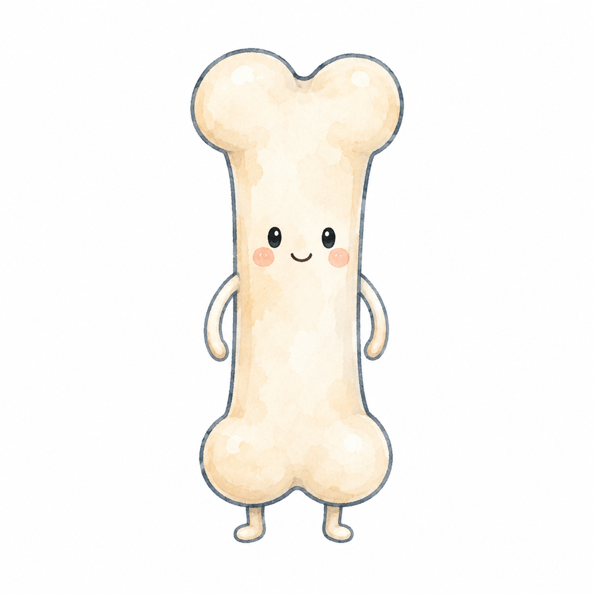
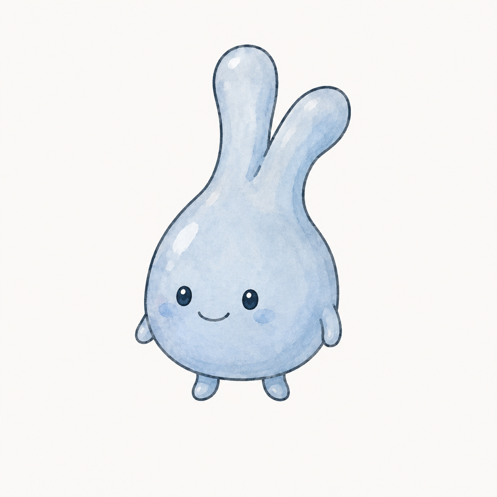
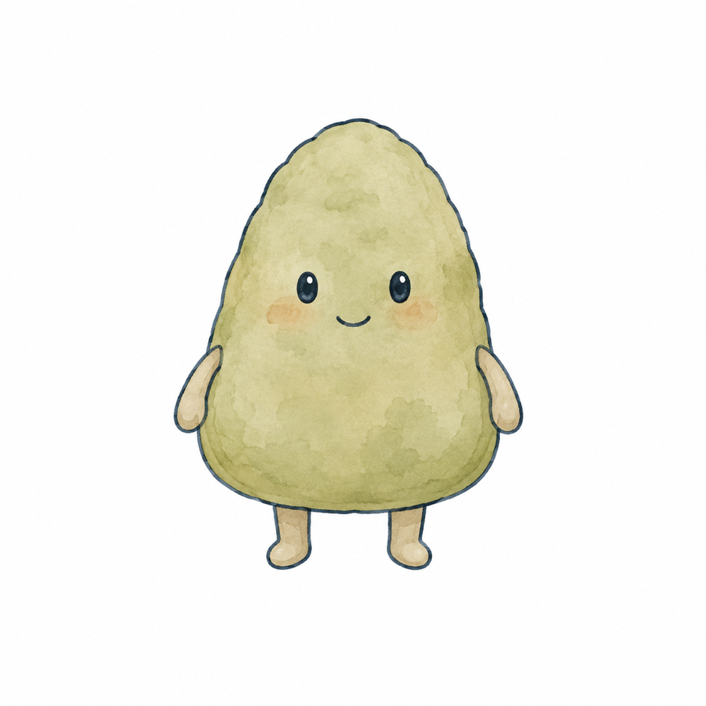

01

甲狀腺
掌管身體日常代謝，以及面臨壓力時的荷爾蒙調控；也涵蓋抽血功能異常、脖子腫塊評估與孕期甲狀腺諮詢。
症狀心悸・手抖・凸眼・體重變化・脖子腫塊療程功能評估・治療討論・孕期追蹤・甲狀腺消融
完整認識甲狀腺照護→CONDITIONS
先辨認身體正在面對哪一類問題。每個主題頁會再整理常見症狀、檢查方式、治療選擇與追蹤重點。

掌管身體日常代謝，以及面臨壓力時的荷爾蒙調控；也涵蓋抽血功能異常、脖子腫塊評估與孕期甲狀腺諮詢。

控糖不只是為了血糖數字，更是為了保護心臟與腎臟，降低長期併發症風險。

吃得少，還是可能遇到體重停滯期。從內分泌與體組成進行代謝評估，讓減重更科學、更貼近個人狀況。

評估 DEXA 骨密度與未來骨折風險，提早守護行動力，讓十年後的自己仍能自在生活。

它是身體的內分泌總指揮，出了狀況時症狀可能很多元。從症狀、荷爾蒙數值與影像一起確認，找出問題的來源。

遇到影像意外發現腎上腺腫瘤，或難治型高血壓時，進一步確認是否有荷爾蒙異常。
FEATURED TREATMENTS
良性甲狀腺結節，也有微創治療的新選擇。療程不是疾病分類，也不是看見結節就能直接選擇；每一項治療都要先釐清病灶性質、身體感受與照護目標。
理解結節位置、大小與影像特徵，作為後續處置與追蹤的基礎。
需要時整合細胞學與超音波資訊，不只依單一檢查決定下一步。
觀察症狀、甲狀腺功能與影像變化，必要時重新討論照護方向。